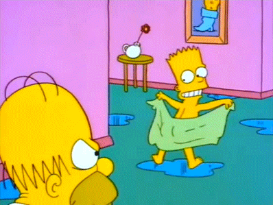

Bartholomew J. Bouvier Simpson[1], também conhecido como "Bart Simpson", ou apenas "Bart", (1 de abril de 1980) é o filho mais velho da família Simpson. O personagem é retratado como um menino rebelde e desobediente que tem más notas na escola. Este comportamento o deixa frequentemente em situações difíceis com as pessoas que trabalham em sua escola, com sua família, e com estranhos.[2] É revelado em alguns episódios que o mal dentro de Bart deve-se ao fato de Marge ter acidentalmente bebido uma gota de álcool durante a gravidez, o que mexeu com o cérebro do bebê, dando a sua personalidade as características negativas que compõem o estilo do personagem. O seu cabelo, apesar de aparecer louro, é vermelho, apenas doura com o sol (temporada 20, episódio 12).[3] No elenco, Nancy Cartwright originalmente planejava fazer um teste para o papel de Lisa, enquanto Yeardley Smith tentava sair para o Bart. A voz de Smith era alta demais para um menino, então ela recebeu o papel de Lisa. Cartwright descobriu que Lisa não era interessante na época, então fez o teste para Bart, que ela achou que era um papel melhor.[4]
